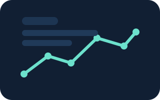
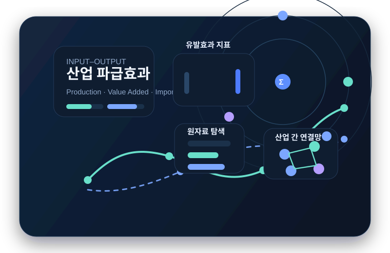
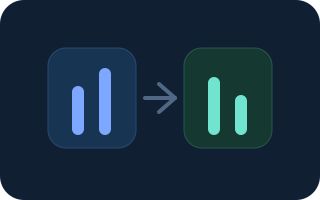

Scenario Lab
최종수요 변화 시뮬레이션
복수 산업의 수요 증가를 합산하여 생산·부가가치·수입 유발효과를 한 번에 계산합니다.
생산·부가가치·수입 유발효과를 한 화면에서 분석하고, 산업 간 거래 구조와 원자료까지 탐색할 수 있는 산업연관 분석 대시보드입니다.


복수 산업의 수요 증가를 합산하여 생산·부가가치·수입 유발효과를 한 번에 계산합니다.
선택 산업이 어떤 산업에서 중간재를 공급받고 어디에 판매하는지 시각적으로 파악합니다.

중간투입계수와 유발계수를 나란히 놓고 구조적 차이를 빠르게 확인합니다.
시트·행·열을 검색하고, 선택한 셀의 정확한 코드와 수치를 즉시 확인할 수 있습니다.
복잡한 표 대신 핵심 지표, 순위, 비교표를 카드와 차트 중심으로 정리했습니다.
특정 산업의 수요 증가를 가정합니다.
국내 중간재 거래를 따라 파급됩니다.
생산·부가가치·수입 유발효과로 확인합니다.
최종수요 1단위당 총산출 유발
최종수요 1단위당 부가가치 유발
최종수요 1단위당 수입 유발
자료를 불러오는 중입니다.
수요 변화에 가장 민감하게 반응하는 산업
산업마다 다른 생산·부가가치·수입유발계수
해석 안내 전산업 계수는 한국은행 공표자료 기준의 평균적 파급효과이며, 산업별 순위는 특정 산업에 최종수요가 증가한다고 가정했을 때의 개별 유발계수입니다.
여러 산업을 묶어 시나리오를 만들고 파급효과 결과를 카드 형태로 확인합니다.
산업과 증가액을 선택하고 시나리오에 추가하세요.
예시: 10억 원은 10을 입력합니다. 결과도 억 원 기준으로 계산됩니다.
동일 산업은 자동 합산됩니다.
공급 산업과 구매 산업을 나눠 핵심 흐름만 빠르게 보여줍니다.
선택 산업이 구매한 중간재 · 백만원
선택 산업으로부터 중간재를 구매한 산업 · 백만원
표 해석 국산거래표의 행은 공급 산업, 열은 사용 산업입니다. 중간재 거래만 집계하며 소비·투자·수출 등 최종수요는 제외됩니다.
막대 길이와 수치를 함께 보여 주어 구조 차이를 직관적으로 비교합니다.
시트 전체를 탐색하면서 필요한 셀을 직접 짚어 확인할 수 있습니다.
공식 원자료, 계산식, 해석 시 유의할 점을 간단한 인포카드로 정리했습니다.
한국은행 「2023년 산업연관표(연장표)」의 생산자가격 기준 데이터를 사용합니다. 대·중·소·기본부문 4단계 분류를 지원합니다.
국산품 생산유발계수 행렬의 해당 열에 최종수요 증가액을 곱해 생산 파급효과를 계산합니다.
부가가치유발계수와 수입유발계수를 적용하여 산업별 유발액을 산출합니다.
기술구조가 변하지 않는 정태적 분석이며, 미래 경기·가격 변화·생산능력 제약은 반영하지 않습니다.
원본 거래액 표의 단위는 백만원, 유발·투입계수는 무차원입니다. 시뮬레이션 입력은 억 원 기준이며 결과도 억 원 기준으로 계산됩니다.